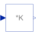

MatrixGainOutput the product of a gain matrix with the input signal vector |

|
Information
This information is part of the Modelica Standard Library maintained by the Modelica Association.
This blocks computes output vector y as product of the gain matrix K with the input signal vector u:
y = K * u;
Example:
parameter: K = [0.12 2; 3 1.5]
results in the following equations:
| y[1] | | 0.12 2.00 | | u[1] |
| | = | | * | |
| y[2] | | 3.00 1.50 | | u[2] |
Parameters (3)
| nin |
Value: size(K, 2) Type: Integer Description: Number of inputs |
|---|---|
| nout |
Value: size(K, 1) Type: Integer Description: Number of outputs |
| K |
Value: [1, 0; 0, 1] Type: Real[:,:] Description: Gain matrix which is multiplied with the input |
Connectors (2)
| u |
Type: RealInput[nin] Description: Connector of Real input signals |
|
|---|---|---|
| y |
Type: RealOutput[nout] Description: Connector of Real output signals |